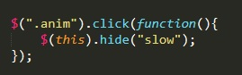
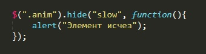

Функция hide - изменяет значение display элемента на значение none и элемент пропадает.
У функции hide есть два входных параметра. Первый задает скорость исчезания элемента. Этот параметр может принимать либо числовое значение в милисекундах (100-1000), либо задаваться оператором (слово либо fast (200 милисекунд) либо slow (600 милсекунд)).
Пример:
На заданном примере с помощью Jquery мы обращаемся к элементу с классом anim и вызываем событие click. событие вызывает функцию, которая применяет к этому же элементу функцию hide.
Вторым входным параметром функции hide может быть функцию, которая будет выполнена после того как элемент исчез
Пример:
Функция hide затрагивает не только свойство display. Оно так же изменяет параметры width, height, а так же opaciti. Используя эту функцию надо быть аккуратнее, так как весь сайт может перекособочить.